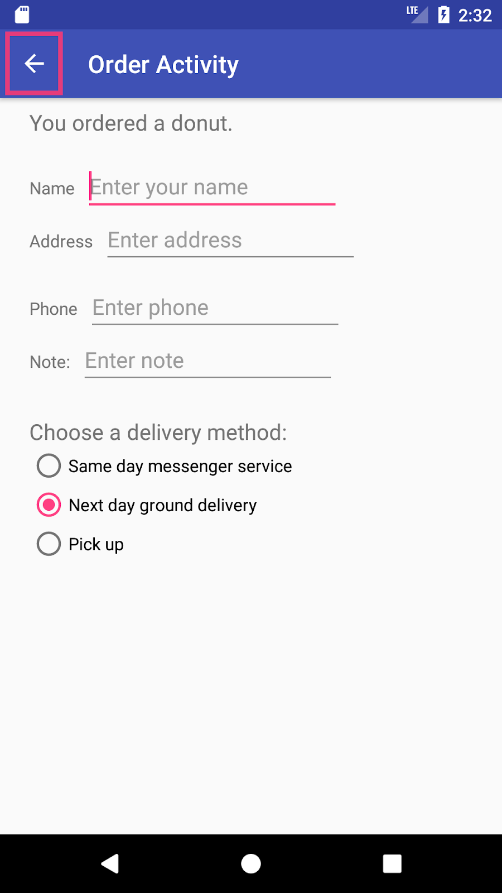

この実践的なコードラボは、Android Developer Fundamentals (Version 2) コースの Unit 2: User experience の一部です。このコースでは、コードラボを順を追って学習することで、このコースを最大限に活用することができます。
コースのコードラボの完全なリストについては、Codelabs for Android Developer Fundamentals (V2)を参照してください。
すべてのコンセプトチャプター、アプリ、スライドへのリンクを含むコースの詳細については、Android Developer Fundamentals (Version 2)を参照してください。
注：このコースでは、「codelab」と「実践」という用語を入れ替えて使用しています。
序章
アプリ開発の初期段階では、各タスクを実行するためにユーザーがアプリを介して実行するパスを決定する必要があります（タスクとは、注文やコンテンツの閲覧などのことです）。各パスによって、ユーザーはアプリ内のタスクやコンテンツを横断したり、中に入ったり、外に出たりすることができます。
この実習では、次のようにアプリ バーにアップ ボタン（左向きの矢印）を追加する方法を学びます。
Up ボタンは常に階層内の親画面に移動するために使用されます。戻るボタン(画面下部の三角形)とは異なり、ユーザーが最後に見た画面へのナビゲーションを提供します。
この実習では、画面の上部にタブが表示され、他の画面へのナビゲーションを提供するタブナビゲーションについても紹介します。タブナビゲーションは、下の図に示すように、ある子画面から兄弟子画面への横方向のナビゲーションを作成するための一般的な方法です。
上の図では
あるカテゴリ画面（トップストーリーズ、テックニュース、料理）から別のカテゴリ画面への横方向のナビゲーション
1つのストーリー画面（ストーリー）から別のストーリー画面への横方向のナビゲーション
タブを使用すると、ユーザーは親画面まで移動することなく、兄弟画面間を移動することができます**。
タブは、4つ以下の兄弟画面に最適です。別の画面を表示するには、タブをタップするか、左右にスワイプします。
すでに知っておくべきこと
できるようになるはずです。
Android Studioでアプリを作成して実行する。
レイアウトエディタを使用して UI 要素を作成および編集する。
XML レイアウトコードを編集し、Java コードから要素にアクセスする。
アプリバーのオプションメニューにメニュー項目やアイコンを追加する。
学習内容
アプリバーにアップボタンを追加する方法
タブナビゲーションとスワイプビューでアプリを設定する方法
あなたがすること
前回の実践から引き続き、Droid Cafeプロジェクトに機能を追加する。
親アクティビティまで移動するためのアップボタンをアプリバーに用意する。
スワイプも可能なアクティビティ画面をナビゲートするためのタブを持つアプリを新たに作成する。
前回のオプションメニューの使い方の実習では、基本アクティビティのテンプレートを使ってDroid Cafeというアプリを作成しました。このテンプレートは、画面の上部にアプリバーを提供します。2つ目のアクティビティ(OrderActivity)から親アクティビティ(MainActivity)へのアップナビゲーションのために、アプリバーにアップボタン(左向きの矢印)を追加する方法を学びます。これでDroid Cafeアプリが完成します。
前回の実践で途中で中断したところからプロジェクトを開始するには、Android StudioプロジェクトのDroidCafeOptionsをダウンロードしてください。

また、アプリバーの下に3つのタブを表示して兄弟画面に移動するタブナビゲーション用のアプリを作成します。ユーザーがタブをタップすると、どのタブをタップしたかに応じてコンテンツ画面が表示されます。また、ユーザーは左右にスワイプしてコンテンツ画面に移動することもできます。ViewPager クラスは、画面や View 要素へのユーザーのスワイプを自動的に処理します。
アプリは、ユーザーがアプリのメイン画面（通常は親アクティビティ）に戻る方法を簡単に見つけられるようにする必要があります。これを行う1つの方法は、親アクティビティの子である各アクティビティのアプリバーに「上へ」ボタンを提供することです。
アップボタンは先祖代々の「アップ」ナビゲーションを提供し、ユーザーが子ページから親ページへと上に行くことを可能にします。上」ボタンは、下の図の左側に示すように、アプリバーの左側にある左向きの矢印です。
ユーザーが「上へ」ボタンをタッチすると、アプリは親アクティビティに移動します。下図の右側の図は、画面間の階層的な関係に基づいてアプリ内を移動するために Up ボタンがどのように使用されるかを示しています。
上の図では
第1レベルの兄弟画面から親画面へのナビゲート
第2レベルの兄弟から親画面として動作する第1レベルの子画面への移動
ヒント: UI の [戻る] ボタン (デバイスの下部にある三角形) と [上] ボタンは 2 つの異なるものです。
戻るボタンは、直近に表示された画面へのナビゲーションを提供します。ユーザーが横方向のナビゲーションパターンを使用してナビゲーションできる子画面が複数ある場合（次のセクションで説明します）、[戻る]ボタンは、親画面ではなく、前の子画面にユーザーを送り返します。
子画面から親画面に戻るナビゲーションを提供するには、アップボタンを使用します。上昇ナビゲーションの詳細については、「上 昇ナビゲーションの提供」を参照してください。
前回学んだように、アプリにアクティビティを追加する際に、AndroidManifest.xmlファイルでアクティビティの親をMainActivityと宣言することで、OrderActivityなどの子アクティビティにアップボタンナビゲーションを追加することができます。また、「OrderActivity」のようなアクティビティ画面のタイトルにandroid:label属性を設定することもできます。以下の手順で設定してください。
前回の実践からまだドロイドカフェアプリを開いていない場合は、Android StudioプロジェクトのDroidCafeOptionsをダウンロードしてプロジェクトを開きます。
AndroidManifest.xmlを開き、OrderActivityのActivity要素を以下のように変更します。
android:labelの値「Order Activity」をtitle_activity_orderという名前の文字列リソースに抽出します。
アプリを実行します。
Order Activity画面には、親アクティビティに戻るためのUpボタン（下の図で強調表示）がアプリバーに表示されます。
タスク1のソリューションコード
Android Studioプロジェクト。DroidCafeOptionsUp
ラテラル ナビゲーションを使用すると、ユーザーは1つの兄弟から別の兄弟へ（多階層階層の同じレベルで）移動することができます。たとえば、アプリが複数のカテゴリのストーリーを提供している場合（下図に示すように、トップストーリーズ、テックニュース、料理など）、親画面に戻ることなく、1つのカテゴリから次のカテゴリに移動できる機能をユーザーに提供したいと思うでしょう。ラテラルナビゲーションのもう一つの例としては、Gmailの会話の中で左右にスワイプして、同じ受信トレイにある新しいものや古いものを表示する機能があります。

上の図では
あるカテゴリ画面から別のカテゴリ画面への横方向のナビゲーション
1つのストーリー画面から別の画面への横方向のナビゲーション
各画面を表すタブを使って横方向のナビゲーションを実装することができます。タブは、上図の左側に示すように、他の画面へのナビゲーションを提供するために、画面の上部に表示されます。タブ・ナビゲーションは、階層内の同じ位置にあり、同じ親画面を共有している兄弟姉妹の子画面から、ある子画面から別の子画面への横方向のナビゲーションのための非常に一般的なソリューションです。タブ ナビゲーションは、子画面を左から右へ、または右から左へスワイプする機能と組み合わせて使用されることがよくあります。
タブの表示に使用される主なクラスは、Android Design Support Library の TabLayout です。これはタブを表示するための水平レイアウトを提供します。アプリバーの下にタブを表示したり、PagerAdapterクラスを使ってViewPagerの中に画面の「ページ」を埋め込んだりすることができます。ViewPager は、ユーザーが画面を左右にめくることができるレイアウト マネージャです。これは、アクティビティ内でコンテンツの異なる画面を表示するための一般的なパターンです。アクティビティ内で表示するコンテンツ画面を埋めるアダプタと、どのタブが選択されているかによってコンテンツ画面を変更するレイアウト マネージャを使用します。
ビューが表示する画面を生成するために PagerAdapter を実装します。ViewPager は Fragment と組み合わせて使用することが最も多いです。Fragment を使用することで、画面の「ページ」のライフサイクルを管理する便利な方法を手に入れることができます。
Androidサポートライブラリのクラスを使用するには、com.android.support:design:xx.xx.xx.x（ここではxx.xx.xx.xが最新バージョン）をbuild.gradle（Module: app）ファイルに追加します。
ViewPager でフラグメントを使用するための標準アダプタは以下の通りです。
FragmentPagerAdapter。固定された少数の画面を表す兄弟画面 (ページ) 間を移動するために設計されています。
FragmentStatePagerAdapter: フラグメントのコレクション間でページングするために設計されています。画面数が不確定な画面 (ページ) のコレクション間のページング用に設計されています。これは、ユーザーが他の画面に移動する際に各フラグメントを破棄し、メモリ使用量を最小限に抑えます。このタスクのアプリは FragmentStatePagerAdapter を使用しています。
2.1 プロジェクトとレイアウトの作成
Empty Activity テンプレートを使用して、新しいプロジェクトを作成します。アプリの名前を Tab Experiment とします。
build.gradle (Module: app)ファイルを編集し、TabLayoutを使用するために必要なAndroid Design Support Libraryの依存関係セクションに以下の行を追加します。
実装 'com.android.support:design:26.1.0'
Android Studioがより高い番号のバージョンを提案している場合は、上の行を編集してバージョンを更新してください。
アプリバーとアプリタイトルではなくツールバーを使用するには、res > values > styles.xmlファイルに以下の属性を追加して、アプリバーとタイトルを非表示にします。
activity_main.xmlレイアウトファイルを開き、テキストタブをクリックしてXMLコードを表示します。
以前の演習で行ったように、ConstraintLayoutをRelativeLayoutに変更します。
android:id 属性と android:padding の 16dp を RelativeLayout に追加します。
テンプレートによって提供された TextView を削除し、以下のコードに示すように、ツールバー、TabLayout、および ViewPager を RelativeLayout 内に追加します。
Toolbarのapp:popupTheme属性を入力すると、RelativeLayoutに以下の文を追加していないとアプリが赤字になります。
<RelativeLayout xmlns:app="http://schemas.android.com/apk/res-auto"
アプリをクリックしてOption+Enter（またはAlt+Enter）を押すと、Android Studioが自動的にステートメントを追加してくれます。
2.2 各フラグメントのクラスとレイアウトを作成する
各タブ付き画面を表すフラグメントを追加するには、以下の手順に従います。
Android > プロジェクトペインで com.example.android.tabexperiment をクリックします。
ファイル] > [新規作成] > [フラグメント] > [フラグメント（空白）] を選択します。
フラグメントの名前を TabFragment1 とします。
Create layout XML?オプションを選択します。
XML ファイルのフラグメント レイアウト名を tab_fragment1 に変更します。
Include fragment factory methods? オプションと Include interface callbacks? オプションをクリアします。これらのメソッドは必要ありません。
完了 をクリックします。
ステップ 3 では TabFragment2 と TabFragment3、ステップ 4 では tab_fragment2 と tab_fragment3 を使用して、上記の手順を繰り返します。
各フラグメントは、クラス定義がFragmentを拡張するように設定された状態で作成されます。また、各フラグメントは画面に関連付けられたレイアウト（tab_fragment1、tab_fragment2、tab_fragment3）を膨らませ、前の章でオプションメニューで学んだお馴染みのリソースインフレートデザインパターンを使用します。
例えば、TabFragment1 は次のようになります。
2.3 フラグメントレイアウトの編集
各FragmentレイアウトXMLファイル（tab_fragment1、tab_fragment2、tab_fragment3）を編集します。
FrameLayout を RelativeLayout に変更します。
TextView テキストを "These are the top stories." に変更し、layout_width と layout_width を変更します。"に変更し、layout_width と layout_height を wrap_content に変更します。
テキストの外観を android:textAppearance="?android:attr/textAppearanceLarge" で設定します。
上記の手順をフラグメントレイアウトXMLファイルごとに繰り返し、ステップ2でテキストビューに異なるテキストを入力します。
tab_fragment2.xmlにあるTextViewのテキストを入力します。"使用できる技術ニュース。"
tab_fragment3.xmlのTextViewのテキスト。"料理のヒント。"
各フラグメントのレイアウト XML ファイルを調べます。たとえば、tab_fragment1 は次のようになります。
フラグメント・レイアウト XML ファイル tab_fragment1 で、"These are the top stories:" の文字列を文字列リソース tab_1 に展開します。tab_fragment2 と tab_fragment3 の文字列についても同様にします。
2.3 PagerAdapter の追加
アダプタ・レイアウト・マネージャ・パターンを使用すると、アクティビティ内でコンテンツの異なる画面を提供することができます。
アダプタを使用して、アクティビティ内に表示するコンテンツ画面を埋めます。
どのタブが選択されているかに応じてコンテンツ画面を変更するレイアウト・マネージャを使用します。
次の手順に従って、FragmentStatePagerAdapter を継承し、タブ数 (mNumOfTabs) を定義する新しい PagerAdapter クラスをアプリに追加します。
Android > プロジェクトペインのcom.example.android.tabexperimentをクリックします。
ファイル] > [新規作成] > [Java クラス] を選択します。
クラス PagerAdapter に名前を付け、Superclass フィールドに FragmentStatePagerAdapter と入力します。このエントリは、android.support.v4.app.FragmentStatePagerAdapter に変更されます。
Public および None オプションを選択したままにして、OK をクリックします。
プロジェクト > Android ペインで PagerAdapter を開きます。クラス定義の横に赤い電球が表示されます。この電球をクリックして、「メソッドの実装」を選択し、「OK」をクリックして、すでに選択されている getItem() と getCount() メソッドを実装します。
クラス定義の横にもう一つ赤い電球が表示されるはずです。この電球をクリックして、「Create constructor matching super」を選択します。
整数のメンバ変数 mNumOfTabs を追加し、それを使用するようにコンストラクタを変更します。これでコードは以下のようになるはずです。
上記のコードを入力している間に、Android Studioでは以下のように自動でインポートされます。
コード内のFragmentManagerが赤で表示されている場合、それをクリックすると赤い電球アイコンが表示されるはずです。電球アイコンをクリックして、クラスのインポートを選択します。インポートの選択肢が表示されます。FragmentManager（android.support.v4）を選択します。
新しく追加された getItem() メソッドを以下のように変更します。これは、どのタブがクリックされたかに応じて表示する Fragment を返すためにスイッチケースブロックを使用するものです。
新しく追加されたgetCount()メソッドを以下のように変更して、タブの数を返すようにします。
2.4 ツールバーとTabLayoutを膨らませる
アプリバーの下に収まるタブを使用しているので、このタスクの最初のステップで、アプリバーとツールバーをactivity_main.xmlレイアウトに設定しました。次に、ツールバーを膨らませて（オプションメニューについての前の章で説明したのと同じ方法で）、タブを配置するためのTabLayoutのインスタンスを作成する必要があります。
MainActivityを開き、setSupportActionBar()を使用してツールバーを膨らませるために、onCreate()メソッド内に以下のコードを追加します。
strings.xmlを開き、以下の文字列リソースを作成します。
onCreate() メソッドの最後に、レイアウト内の tab_layout 要素からタブレイアウトのインスタンスを作成し、addTab() を使用して各タブにテキストを設定します。
2.5 PagerAdapter を使用してスクリーンビューを管理する
前のタスクで onCreate() メソッドに追加したコードの下に、PagerAdapter を使用してフラグメント内の画面 (ページ) ビューを管理するための以下のコードを追加します。
onCreate()メソッドの最後に、タブがクリックされたかどうかを検出するリスナー(TabLayoutOnPageChangeListener)を設定し、ViewPagerを適切なタブ付き画面に設定するためのonTabSelected()メソッドを作成します。コードは以下のようになるはずです。
アプリを実行します。各タブをタップすると、それぞれの「ページ」（画面）が表示されます。また、左右にスワイプして、それぞれの「ページ」を見ることができるはずです。
アプリを起動します。各タブをタップすると、各「ページ」（画面）が表示されます。また、左右にスワイプして別の「ページ」を訪問することもできるはずです。
タスク2のソリューションコード
Android Studioプロジェクト。TabExperiment
注意: コーディングの課題はすべて任意であり、後のレッスンの前提条件ではありません。
課題。ナビゲーションドロワーを持つ新しいアプリを作成します。ユーザーがナビゲーションドロワーの選択肢をタップすると、ドロワーを閉じて、どの選択肢が選択されたかを示すToastメッセージを表示します。
ナビゲーションドロワーは、下の図の右側に示すように、通常は画面の左端にナビゲーションオプションを表示するパネルです。下の図の左側に示すように、ユーザーが画面の左端から指をスワイプするか、アプリバーのナビゲーションアイコンをタッチすると、ほとんどの場合は非表示になります。

上の図では
アプリバーのナビゲーションアイコン
ナビゲーションドロワー
ナビゲーションドロワーのメニュー項目
アプリ内にナビゲーションドロワーを作成するには、以下のようなレイアウトを作成する必要があります。
アクティビティ・レイアウトのルートViewGroupとしてのナビゲーション・ドロワー。
ドロワー自体のナビゲーション・ビュー。
ナビゲーション・アイコン・ボタンを含むアプリ・バー・レイアウト。
ナビゲーション・ドロワーを表示するアクティビティのコンテンツ・レイアウト。
ナビゲーション・ドロワーのヘッダーのレイアウト。
レイアウトを作成した後、以下の作業を行う必要があります。
ナビゲーション・ドロワー・メニューにアイテムのタイトルとアイコンを入力します。
アクティビティ・コードでナビゲーション・ドロワーとアイテム・リスナーをセットアップする。
ナビゲーション・メニューの項目選択を処理する。
ナビゲーションドロワーのレイアウトを作成するには、サポートライブラリで利用可能なDrawerLayout APIを使用します。設計仕様については、ナビゲーション・ドロワー設計ガイドのナビゲーション・ドロワーの設計原則に従ってください。
ナビゲーション・ドロワーを追加するには、アクティビティ・レイアウトのルート・ビューとしてDrawerLayoutを使用します。DrawerLayoutの中に、画面のメインコンテンツ（ドロワーが隠されているときのプライマリレイアウト）を含む1つのビューと、ナビゲーションドロワーのコンテンツを含むもう1つのビュー（通常はNavigationView）を追加します。
ヒント：レイアウトを理解しやすくするには、includeタグを使用して、別のXMLレイアウトの中にXMLレイアウトをインクルードします。
下の図は、activity_main.xmlレイアウトとそれに含まれるXMLレイアウトを視覚的に表したものです。

上の図では
DrawerLayoutはアクティビティレイアウトのルートビューです。
付属のapp_bar_main.xmlでは、ルートとしてCoordinatorLayoutを使用しており、ツールバーでアプリバーのレイアウトを定義しており、このツールバーはドロワーを開くためのナビゲーションアイコンを含みます。
NavigationViewは、ナビゲーションドロワーのレイアウトとそのヘッダーを定義し、そこにメニュー項目を追加します。
チャレンジソリューションのコード
Android Studioプロジェクト。NavDrawerExperiment
アプリバーのナビゲーションです。
AndroidManifest.xmlファイルで親アクティビティを宣言することで、子アクティビティにアップボタンナビゲーションを追加します。
子の親アクティビティを子の <activity ... </activity> セクション内で宣言します。
タブナビゲーション。
タブは、兄弟ビュー間の「横方向のナビゲーション」に適したソリューションです。
タブに使用される主なクラスは、Android Design Support LibraryのTabLayoutです。
ViewPagerは、ユーザーがデータのページを左右にめくることができるレイアウト・マネージャーです。ViewPager は Fragment と組み合わせて使用することが多いです。
ViewPager を使用するには、2 つの標準アダプタのうちの 1 つを使用します。FragmentPagerAdapter または FragmentStatePagerAdapter です。
関連するコンセプトのドキュメントは4.4にあります。ユーザーナビゲーションにあります。
Android developer documentation:
- User Interface & Navigation
- Designing effective navigation
- Implementing effective navigation
- Creating swipe views with tabs
- Create a navigation drawer
- Designing Back and Up navigation
- Providing Up navigation
- Implementing Descendant Navigation
TabLayout- Navigation Drawer
DrawerLayout- Support Library
Material Design spec:
Android Developers Blog: Android Design Support Library
他:
- AndroidHive: Android Material Design working with Tabs
- Truiton: Android Tabs Example – With Fragments and ViewPager
このセクションでは、インストラクターが主導するコースの一部として、このコードラボを通して作業する学生のための可能な宿題をリストアップします。以下のことを行うのはインストラクター次第です。
必要に応じて宿題を割り当てる。
宿題の提出方法を学生に伝える。
宿題の割り当てを評価します。
講師は、これらの提案を少しでも多くのように使用することができますし、彼らが適切であると感じる他の宿題を割り当てるために自由に感じる必要があります。
あなた自身でこのコードラボを介して作業している場合は、あなたの知識をテストするためにこれらの宿題の割り当てを使用して自由に感じています。
アプリを構築して実行する
メイン アクティビティと少なくとも 3 つの他のアクティビティの子を持つアプリを作成します。各アクティビティにはオプション メニューがあり、以下に示すように、アプリ バーとして v7 appcompat サポート ライブラリ ツールバーを使用する必要があります。
メイン アクティビティでは、自分で選択した画像でグリッド レイアウトを作成します。3つの画像（donut_circle.png、froyo_circle.png、icecream_circle.png）は、DroidCafeアプリの一部として提供されています。
必要に応じて画像のサイズを変更し、グリッドレイアウトで3つの画像が画面上で水平に収まるようにします。
各画像を有効にして、子アクティビティへのナビゲーションを提供します。ユーザーが画像をタップすると、子アクティビティが開始されます。各子アクティビティから、ユーザーはアプリバーの「上へ」ボタン（下の図で強調表示）をタップしてメインアクティビティに戻ることができます。
以下の質問に答えてください。
質問1
アクティビティにオプションメニューと v7 appcompat サポートライブラリのツールバーをアプリバーとして提供するテンプレートはどれか? 1つ選択してください。
空のアクティビティテンプレート
基本的な活動のテンプレート
ナビゲーションドロワー アクティビティテンプレート
ボトムナビゲーション活動
質問2
TabLayoutを使用するために必要な依存関係は？1つ選んでください。
com.android.support:design
com.android.support.constraint:constraint-layout
junit:junit:4.12
com.android.support.test:ランナー
質問3
Upナビゲーションを提供するために、各子アクティビティと親アクティビティをどこで定義しますか？1つを選択してください。
子画面アクティビティに Up ボタンを提供するには、親アクティビティを activity_main.xml ファイルの子アクティビティセクションで宣言します。
子スクリーン・アクティビティに「上へ」ボタンを提供するには、子スクリーン・アクティビティの「メイン」XMLレイアウト・ファイルで親アクティビティを宣言します。
子画面アクティビティにUpボタンを提供するには、AndroidManifest.xmlファイルの子アクティビティセクションで親アクティビティを宣言します。
子画面アクティビティに「上へ」ボタンを提供するには、AndroidManifest.xmlファイルの親アクティビティセクションで親アクティビティを宣言します。
アプリを提出して採点を受ける
学年別ガイダンス
アプリが以下の機能を持っていることを確認してください。
content_main.xml ファイルの GridLayout。
グリッド内の各ナビゲーション要素の新しい Intent と startActivity() メソッド。
グリッド内の各ナビゲーション要素の個別のアクティビティ。
Android Developer Fundamentals (V2)コースの次の実践的なコードラボを探すには、Codelabs for Android Developer Fundamentals (V2)を参照してください。
概念章、アプリ、スライドへのリンクを含むコースの概要については、Android Developer Fundamentals (Version 2)を参照してください。
11。Homework
This section lists possible homework assignments for students who are working through this codelab as part of a course led by an instructor. It's up to the instructor to do the following:
- Assign homework if required.
- Communicate to students how to submit homework assignments.
- Grade the homework assignments.
Instructors can use these suggestions as little or as much as they want, and should feel free to assign any other homework they feel is appropriate.
If you're working through this codelab on your own, feel free to use these homework assignments to test your knowledge.
Build and run an app
- Create an app with five checkboxes and a Show Toast button, as shown below.
- If the user selects a single checkbox and taps Show Toast, display a
Toastmessage showing the checkbox that was selected. - If the user selects more than one checkbox and then taps Show Toast, display a
Toastthat includes the messages for all selected checkboxes, as shown in the figure below.
Answer these questions
Question 1
What's the most important difference between checkboxes and a RadioGroup of radio buttons? Choose one:
- The only difference is in how they appear: checkboxes show a checkmark when selected, while circular "radio" buttons appear filled when selected.
CheckBoxelements in the layout can use theandroid:onClickattribute to call a handler when selected.- The major difference is that checkboxes enable multiple selections, while a
RadioGroupallows only one selection.
Question 2
Which layout group lets you align a set of CheckBox elements vertically? Choose one:
RelativeLayoutLinearLayoutScrollView
Question 3
Which of the following is the method of the Checkable interface to check the state of a radio button (that is, whether it has been selected or not)?
getId()isChecked()onRadioButtonClicked()onClick()
Submit your app for grading
Guidance for graders
Check that the app has the following features:
- The layout includes five
CheckBoxviews vertically aligned on the screen, and a Show Toast button. - The
onSubmit()method determines which checkbox is selected by usingfindViewById()withisChecked(). - The strings describing toppings are concatenated into a
Toastmessage.
12。Next codelab
To find the next practical codelab in the Android Developer Fundamentals (V2) course, see Codelabs for Android Developer Fundamentals (V2).
For an overview of the course, including links to the concept chapters, apps, and slides, see Android Developer Fundamentals (Version 2).